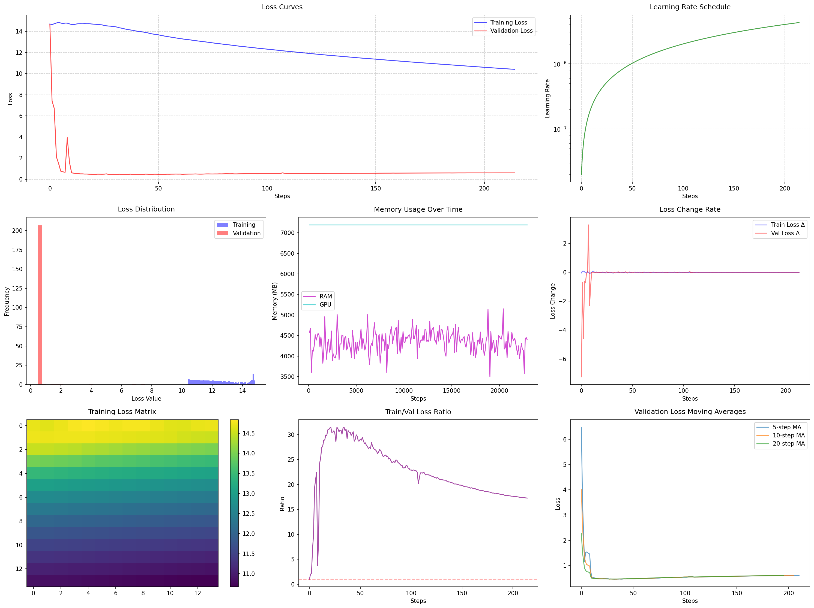

An advanced neural machine translation system built on mBART-50, fine-tuned to translate Tunisian Arabic dialect to English with high accuracy, tackling challenges like code-switching and dialectal variations.
"شكون يضرب الجرس؟"
"Who rang the bell?"
Discover the advanced techniques that power this state-of-the-art Tunisian Arabic to English translation system.
Techniques to ensure efficient training on limited GPU resources:
Custom solutions for Tunisian Arabic dialect challenges:
Enhanced training methods for better model performance:
Tools for tracking and analyzing training progress:
Custom enhancements to the mBART-50 base model:
Options for deploying the model in production:
A deep dive into the architecture powering Tunisian to English translation, built on mBART-50 with dialect-specific enhancements.
The model leverages mBART-50, a multilingual sequence-to-sequence transformer pretrained on 50 languages, fine-tuned for Tunisian Arabic.
| Parameter | Value |
|---|---|
| Architecture | Transformer (seq2seq) |
| Layers | 12 encoder, 12 decoder |
| Attention Heads | 16 |
| Hidden Size | 1024 |
| Parameters | 610M |
| Pretraining | 50 languages |
Handles the unique linguistic features of Tunisian Arabic:
Enables training on consumer-grade GPUs:
# Example: Enabling gradient checkpointing model.config.use_cache = False # Reduces memory usage model.gradient_checkpointing_enable() # Trades speed for memory
Improves context understanding and translation quality:
Input (Tunisian Arabic: "شكون يضرب الجرس؟")
↓
Tokenization (Dialect-Enhanced)
↓
Encoder (12 layers, multi-head attention)
↓
Decoder (12 layers, cross-attention)
↓
Output (English: "Who rang the bell?")
Evaluation results showcasing the model's translation quality and efficiency on Tunisian Arabic datasets.

This plot illustrates the model's training loss decreasing over epochs, demonstrating effective learning and convergence on the Tunisian Arabic to English dataset.
Step-by-step instructions to set up and run the Tunisian to English AI Translator on your system.
# Clone the repository git clone https://github.com/mabroukaymen1/tunisian_english.git cd tunisian-translate-ai-model # Create and activate virtual environment python -m venv venv # Linux/Mac source venv/bin/activate # Windows venv\Scripts\activate # Install dependencies pip install torch==2.0.1+cu117 --extra-index-url https://download.pytorch.org/whl/cu117 pip install -r requirements.txt # Optional: Install 8-bit quantization support pip install bitsandbytes accelerate # Prepare directories mkdir -p models cache logs plots processed
# Process the dataset (e.g., augmented_dataset.csv) python process.py # Start training the model python train.py
Note: Ensure the dataset (e.g., augmented_dataset.csv) is placed in the data/raw/ directory before running process.py.